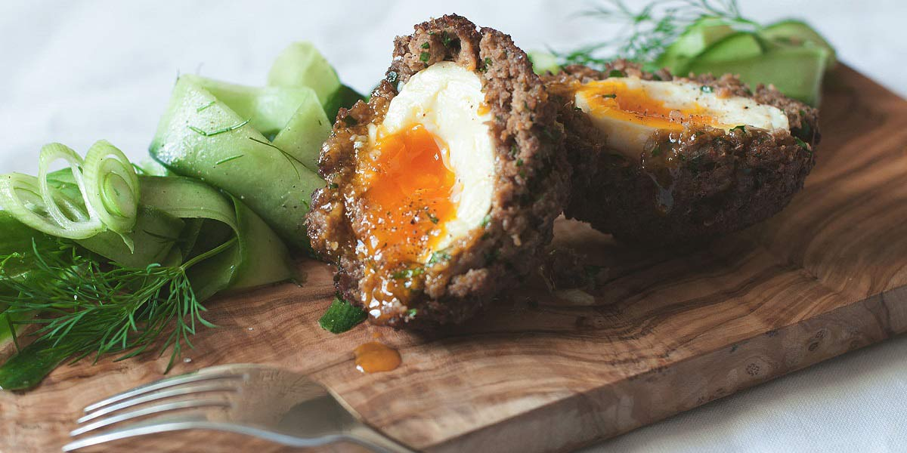

Scotch Egg
Recipe Specification
Ingredients List
| Ingredients | Quantity |
|---|---|
| Large Eggs | 10x1 |
| Cumberland Sausage | 8x1 |
| Chives | 20g |
| Parsley | 20g |
| Nutmeg | ¼ tsp |
| English Mustard | 1 tsp |
| Sliced White Bread | 4 slices |
| Plain Flour | 100g |
| Vegetable Oil | 2 Litres |
Yield: 8 Scotch Eggs
Preparation
- Boil 8 eggs to soft boil, place in ice water and peel.
- Pick and finely chop parsley leaves.
- Finely chop chives.
- Place sliced bread in food processor and blend into crumbs.
- Crack and whisk remaining 2 eggs before seasoning.
- Season plain flour.
- Grate nutmeg.
- Remove meat from sausage skin and mix with mustard, chives, parsley and grated nutmeg.
- Divide sausage mixture into 8 equal portions and apply one portion to the outer layer of each egg. Be sure to apply an even layer of meat around the circumference of the egg.
- Pané each meat covered egg with flour, egg and bread crumb. Ensure excess flour is tapped off and excess egg is removed for even bread coating.
Cooking Instructions
- Place a saucepan of vegetable oil on a medium/high heat and bring vegetable to 160’C.
- Lower heat to sustain temperature before batch frying scotch eggs for 4 minutes. Batch cook 2-3 eggs at a time .

Serving Suggestions
Scotch egg is a great item for picnics as taste good cold as well as hot. It works well with chutneys and compotes.
Storing instructions
Allow to cool to room temperature before placing in an airtight container and placing in the fridge. Consume within 4 days of making it.
Reheating Instructions
Scotch egg is usually best served cold.